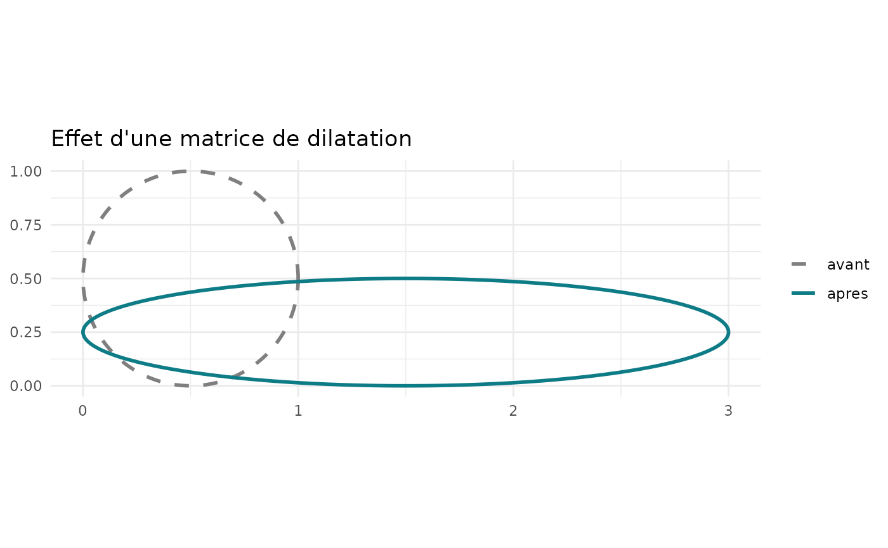
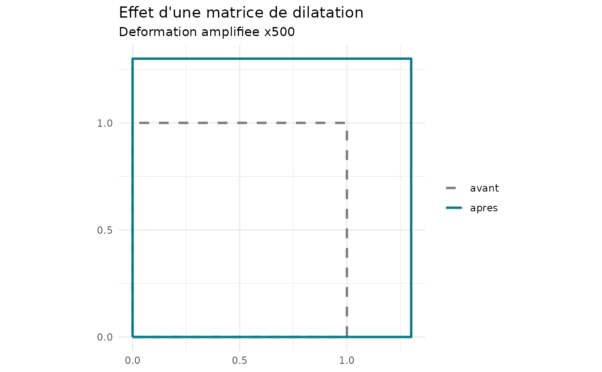

Dessine une forme avant (pointillés) et après (trait plein) dilatation. La forme est le carré unité ou le cercle inscrit dans ce carré.
Usage
dilat_plot(D, forme = c("carre", "cercle"), amplif = 1)Arguments
- D
Matrice de dilatation 2 x 2.
- forme
"carre"(carré unité) ou"cercle"(cercle inscrit dans le carré unité).- amplif
Facteur d'exagération \(a\) de la déformation \(\varepsilon = s - 1\) : le tracé utilise \(s^{trace} = 1 + a\,(s - 1)\). Indispensable en thermique, où \(\varepsilon\) vaut environ 0,001 : sans amplification, les deux formes se superposent. Le facteur est écrit sur le graphique.
Examples
dilat_plot(dilat_matrice(c(3, 0.5)), "cercle")

dilat_plot(dilat_thermique(c(12e-6, 12e-6), 50), amplif = 500)
